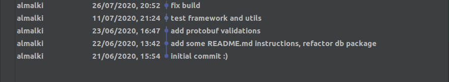

At Tweeq, we are building our payments systems in house. With ambitions to revolutionize the payments scene in the region, it requires a different engineering approach from what traditional financial institutions do. Our systems must be scalable to millions of users, available 24/7, and very easy to change and extensible to adapt to our customers’ needs. Our engineering team should be able to iterate quickly to serve our customers, all while maintaining high quality products.
This is the first post in a series about our platform, explaining how we’re building systems to meet these demands using modern, cloud native technologies.
The first git commit of Tweeq code happened on 21/06/2020, at 15:54.

From that day until now, while we are working to get all the licenses required to operate, we have been working hard to build the best spending account for our customers.
Everyday at Tweeq, we face many engineering trade-offs and challenges, but we always try to make the decisions that would help us innovate, iterate and serve our customer’s needs.
Along this journey, we have made many technical and architectural choices that, fortunately, helped us building a strong foundation for engineering Tweeq’s payments platform:
Programming languages
To build our backend services, we chose golang, a statically typed, compiled programming language designed at Google. It’s easy to read and write, very fast and type-safe. Golang is perfect for building network servers, like web servers or microservices. But to make that decision, we also understand that golang is not widely adopted here in the region and there is a shortage of engineers who have worked with a golang codebase in a professional setting. However, some of our engineers had prior experience with golang, and we believe learning a new language will not be a problem for Tweeq talented engineers.
We also use dart and flutter to build our mobile app. Flutter is an open source portable UI toolkit, from Google, for crafting beautiful, natively compiled applications for mobile, web, and desktop from a single codebase. Flutter proved to be very successful for building cross platform mobile apps, with Google Pay team choosing flutter to build their mobile payment app, and nubank, a digital bank from Brazil, who decided to use Flutter as their primary technology for mobile development over React Native or native code. Flutter worked great for us so far, as we are able to build and run Tweeq app on both Android and iOS from a single codebase, while providing us with excellent performance and great testing capabilities.
gRPC
gRPC is a modern open source high performance Remote Procedure Call (RPC) framework developed also by Google. It uses Protocol Buffers, a powerful serialization language and toolset that works across many programming languages and platforms with code generation for clients and server stubs.
We chose gRPC to easily write our service definitions (contracts) and automatically generate code for both client and server. This heavily boosted our development productivity as we don’t go through the hassle of creating client code, or spending time writing serialization/deserialization code. Moreover, it helped us adopt a design first approach for our APIs, because to build a gRPC service, you first need to define the service and message specs in protobuf format. Once the design is reviewed and approved, client and server stubs are generated automatically using Bazel and it can be used immediately to write the business logic or consume the service as a client.
We use gRPC for both our internal microservices communication and our public APIs consumed by our mobile app. We also automatically generate the dart client code for the mobile app APIs so our mobile developers can start consuming the APIs immediately.
CockroachDB
CockroachDB is a cloud-native distributed SQL database designed to build, scale, and manage modern, data-intensive applications. It scales horizontally; survives disk, machine, rack, and even datacenter failures with minimal latency disruption and no manual intervention; and yet it supports strongly-consistent ACID transactions that are required for our payment systems.
Data access layer is built on top of pgx. SQL statements and queries are hand-crafted without using any ORM. We chose not to use any ORM, since ORMs, though provide an initial development boost, can quickly get messy with a little bit more complex statements or queries. Moreover, such abstractions can become dangerous when extensively used without deep understanding of what’s going on under the hood. I once witnessed, in a previous project where we used ORM for all db access, loading a single web page would result in ~170 db queries, all because of the liberal(normal?) use of accessing related entities in for loops.
Temporal
Temporal is the open source microservice orchestration platform for writing durable workflows as code. Executing critical financial transactions across distributed systems reliably is challenging since failures are inevitable.
Temporal provides us with the tools for retries, rollbacks and cleanup with easy to use DSL to orchestrate our business and financial transactions in a consistent and reliable way across multiple microservices. Temporal also provides end-to-end visibility into the execution of these workflows with complete history of all events related to every single execution.
Monorepo
Monorepo or (monolithic repository), is a strategy in source code management, where all code for different applications, microservices or shared code libraries are all placed in the same code repository. Monorepos provide many advantages, like simplified dependency management and ease of code reuse and sharing, easier visibility and standardization across all components or microservices, and also easier refactoring with atomic commits across multiple components. However, monorepos come with it’s own challenges, for example, traditional build tools do not work well in monorepos, and also changes to common code could have wide impact on many components.
To tackle these issues, we made two choices described next, Bazel and extensive testing. The entire Tweeq backend codebase is in a single repository, we keep everything in this repository, from code to applications configurations and infrastructure configurations. We use this repository to deploy our entire platform to many environments(testing and production).
Bazel
As mentioned above, traditional software build tools do not work well in monorepos. We decided to use Bazel, an open-source build and test tool created by Google. Bazel supports projects in multiple languages and builds outputs for multiple platforms. Bazel uses a DAG (Directed acyclic graph) from buildfiles to establish a build dependency graph, which makes it easy to identify what are the packages that are affected by a change.
Bazel caches all previously done work and tracks changes to both file content and build commands, therefore, it knows exactly what and when something needs to be rebuilt, and rebuilds only that part.
We use Bazel to test, build and generate all our artifacts: golang binaries, container images, configuration and kubernetes YAML files.
Testing
Tweeq engineering team takes the quality of our products seriously, and from day one, we decided to invest in automated tests. We write different tests with different sizes to make sure our assumptions about the code are correct. We classify our tests under three sizes (small, medium and large), with clear well-defined criteria to identify the size. We adopted this naming convention to avoid any confusion on what an integration test, for example, means to different developers. We run these tests before each commit, and before deployment to identify any regressions.
We have ~67% code coverage so far, mostly from small and medium tests, and we are planning to invest more in larger tests that simulate users activities or test our platform as a whole.
Developers workflow and CI/CD
Our developers work on small task at a time, and create a Pull Request once their changes are ready to be reviewed. After opening the PR, a CI workflow kicks off, to do many checks, from code static analysis, security scanning, to running tests and making sure everything is green. After code is peer reviewed and all checks passed, it can be merged into the main branch. With each commit merge, another CI workflow kicks off, but this time it will do more work in addition to the previous checks, to build the deployable artifacts. This workflow will build go binaries, package it into container images, push it to our container repository. It will also generate all required kubernetes configuration manifests to and commit to another git repository to be pulled by our gitops operator, flux, and applied to the targeted environment.
With a similar setup, the production deployment is done but with an approval step to merge the changes. Using Bazel to to run all above mentioned build steps from the CI workflow, it only generates the artifacts (container images, configurations) that are affected by this specific commit.
In a similar way, the mobile app CI would run static analysis, run the tests and publish the binary artifacts for both iOS and Android to Apple App Store (Testflight) and Google Play Store (Internal channel) to be used for testing.
Since we started development, we:
- Made more than 2,000 git commits
- Published more than 700 mobile app versions to App Store and Google Play Store for testing
- Run more than 10,000 CI/CD workflows
In the upcoming posts, we will explain how we run and operate our platform and how we utilize the cloud native ecosystem to efficiently operate, monitor and observe our infrastructure.
Building a Modern Payments Platform was originally published in Tweeq Engineering on Medium, where people are continuing the conversation by highlighting and responding to this story.